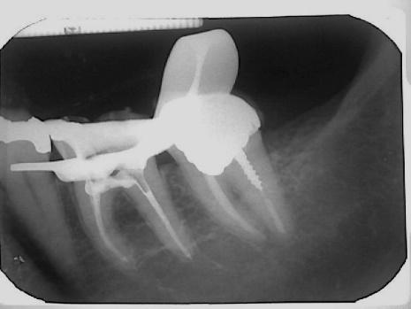
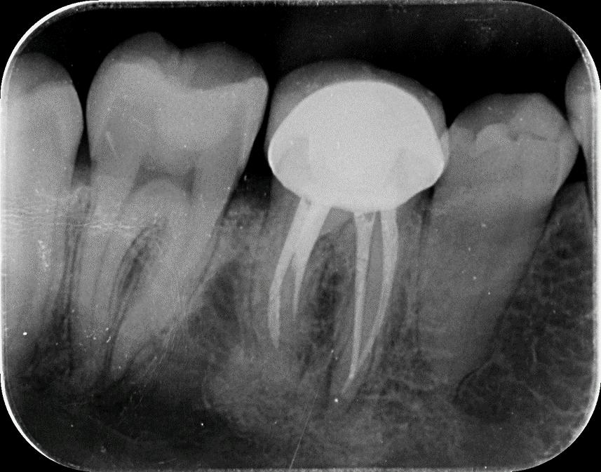
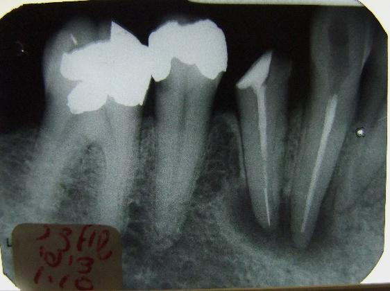

הוצאת מכשיר שבור מהתעלה
במהלך טיפול שורש עלול להישבר מכשיר בתעלת השורש. המכשיר השבור יכול לחסום את החדירה לכל אורך התעלה, ובכך למנוע אפשרות של ניקוי נאות של התעלה, ובעקבות כך, התפתחות של דלקת או אי ריפוי של דלקת קיימת. במקרים אלו יש להעריך האם ניתן להוציא או לעקוף את המכשיר השבור, כדי לאפשר ניקוי ואיטום של כל התעלה. במקרים מסוימים ידרש רק מעקב.
הצגת מקרים
מקרה 1
צילום אבחנתי

המכשיר השבור לאחר הוצאתי

צילום סופי
מקרה 2
צילום אבחנתי

צילום סופי

מקרה 3
צילום אבחנתי
המכשיר השבור לאחר ההוצאה

צילום סופי

מקרה 4
צילום אבחנתי

המכשיר השבור לאחר הוצאתו

צילום לאחר הוצאת המכשיר השבור

צילום אבחנתי

צילום מעקב אחרי שנתיים
בוצע הוצאת המשירים השבורים וחידוש טיפלי שורש

מקרה 5
צילום אבחנתי

המכשיר השבור לאחר ההוצאה

צילום לאחר הוצאת המכשיר השבור וביצוע חידוש טיפול שורש

מקרה 6
צילום אבחנתי

צילום אבחנתי מקרוב
המכשיר השבור לאחר ההוצאה

צילום לאחר הוצאת המכשיר השבור וביצוע חידוש טיפול שורש

מקרה 7
צילום אבחנתי

המכשיר השבור לאחר הוצאתו

צילום לאחר הוצאת המכשיר השבור